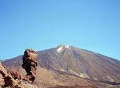
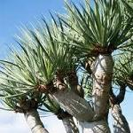
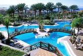

Islas Canarias, paraiso natural
Cuatro de los siete parques nacionales españoles se encuentran en el archipielágo canario, conocido en la antigüedad como Islas Bienaventuradas o Afortunadas.
Los amantees de la naturaleza hallarán aquí todo lo que pueden imaginar y más
| Flora endémica como el Drago o la violeta del Teide |  | Y un envidiable clima subtropical |
|  | Paisajes volcánicos como en ningún otro país de Europa |  |
Visítanos, repetirás ¡seguro!